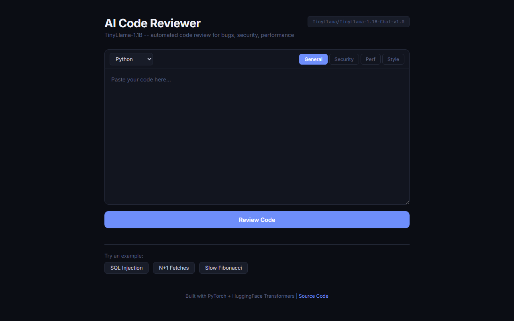

AI
Automated Code Quality Assessment via LLM Inference
TinyLlama-1.1B system for automated code review with severity classification, category tagging, and composite quality scoring. KV-cache optimized.